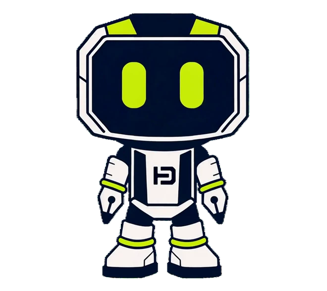
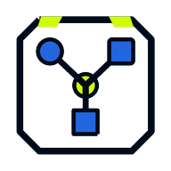
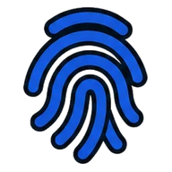
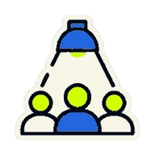
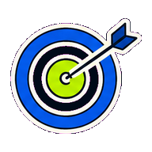
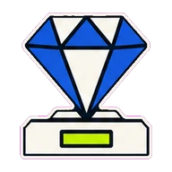
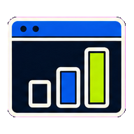
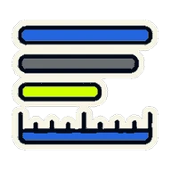

Marca
La reputación- La idea y la corazonada que los clientes ya tienen de ti.
- Se construye con experiencias, conversaciones y resultados.
- Lo que dicen de ti cuando no estás delante.
Monta una identidad que se distinga: logotipo, paleta de colores, tipografía, voz de marca y estilo visual — todo pensado para que tu negocio se reconozca y se vea igual dondequiera que te consigan.



Juntas convierten un negocio en una opción reconocible, confiable y preferida — que te reconozcan de una, más lealtad, y distancia real entre tú y todos los demás en un mercado lleno.
Tu propósito se convierte en una posición clara y en un paquete de marca completo — para que te veas profesional, lo digas sin vueltas, y te recuerden en cada lugar donde la gente te consigue.
La identidad la dibuja un diseñador gráfico profesional, con brief y dirección mía.

Que te notenDestaca donde sea.
Que te escojanSé la respuesta obvia.

Las palabras que suenan a ti. Tono, personalidad y mensajes clave — claros, parejos y que no se confunden con nadie.

Los colores que ponen el ánimo. Una paleta hecha para que te reconozcan, con contraste y parejo en cada superficie.
La marca que te hace reconocible. Logo principal, variaciones y composiciones para cada sitio donde tenga que ir.

Las tipografías que hablan por ti. Escogidas por claridad, jerarquía y una personalidad que aguanta en cualquier tamaño.

Un personaje con el que la gente conecta. Opcional — una mascota propia para humanizar la marca y que den ganas de compartirla.

Los bloques que mantienen todo parejo. Opcional — elementos gráficos, diagramaciones y patrones que hacen que todo se sienta de una sola marca.

El aspecto y el tono de tu historia. Opcional — estilo fotográfico, composición y pautas que agarran tu mundo, a tu manera.

Contenido listo, siempre en marca. Opcional — plantillas, portadas y piezas con el tamaño de cada plataforma donde de verdad publicas.

Tu libro de reglas para que todo quede parejo. Qué sí, qué no y ejemplos claros para que la marca aguante mientras creces.

Todo lo que te hace falta, listo para usar. Archivos fuente, formatos de exportación y piezas — ordenados, y tuyos para siempre.
El despliegue exacto se cuadra según el negocio. No rellenamos el paquete con piezas que nunca vas a usar.
Una marca fuerte le da a la gente otra razón para escogerte: que te reconozcan, que seas relevante, y que confíen.

Sé reconocibleDe un vistazo.
Gánate la confianzaDesde el primer clic.
Que te recuerdenCuando toque decidir.